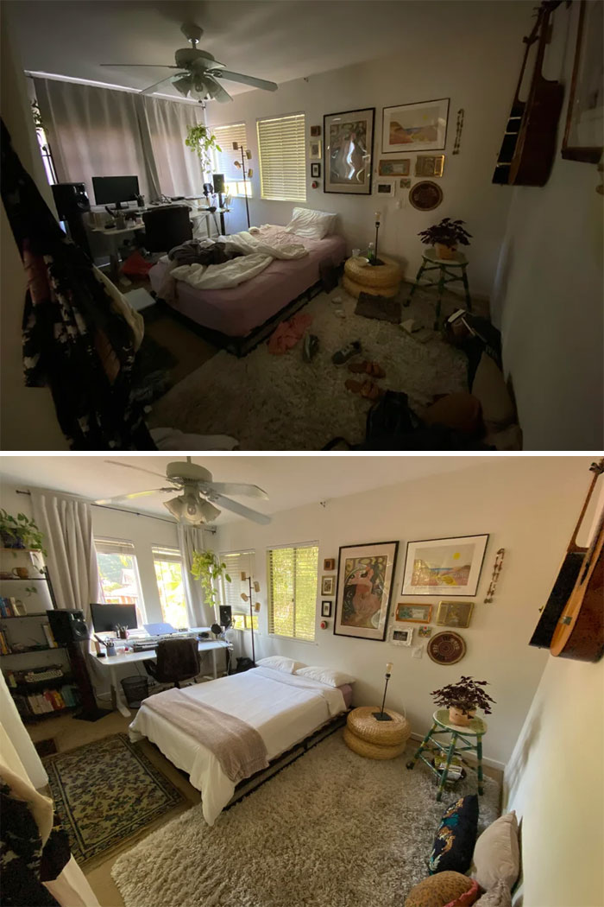
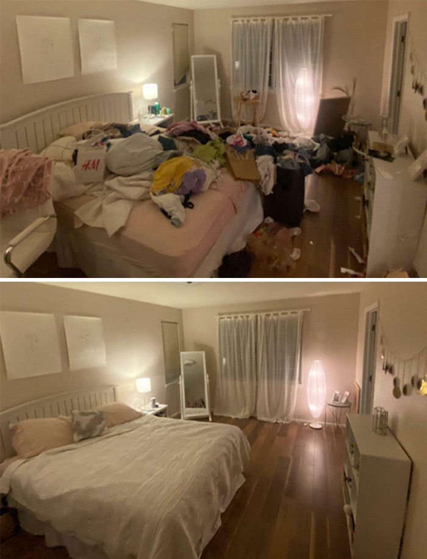
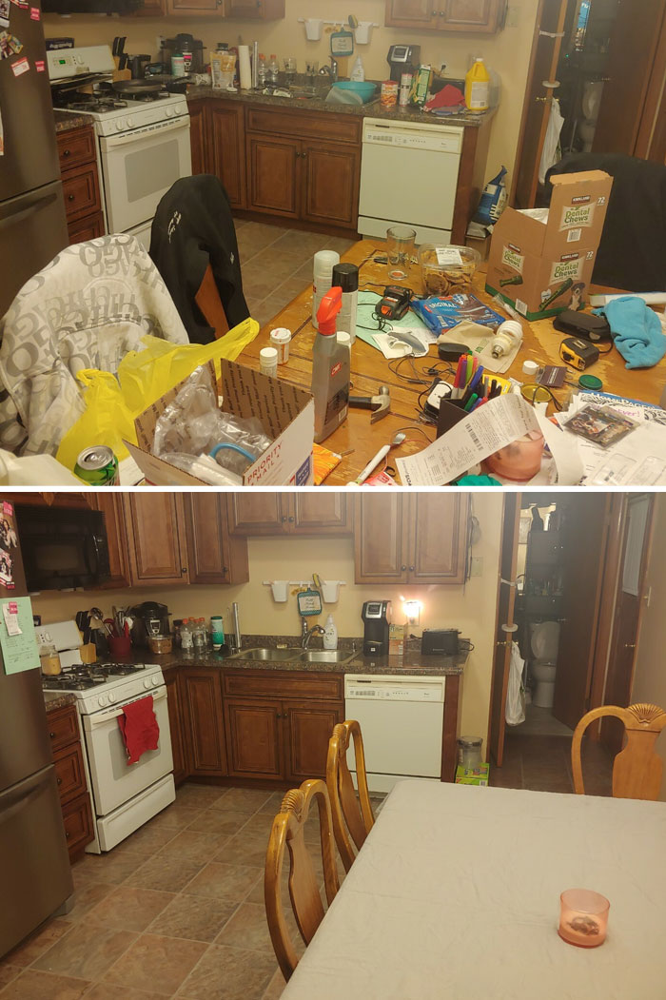
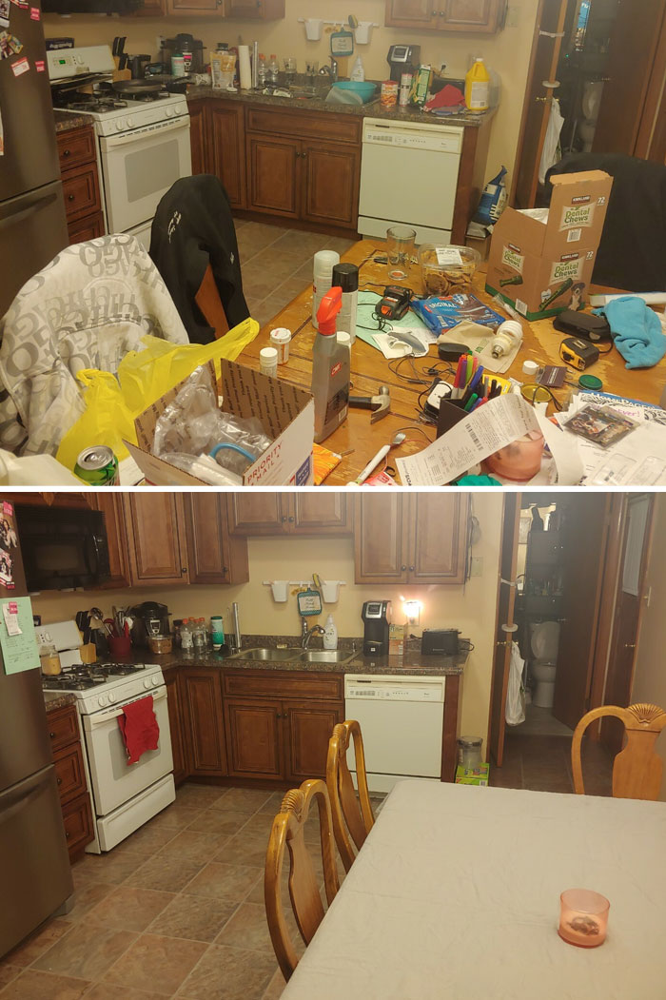
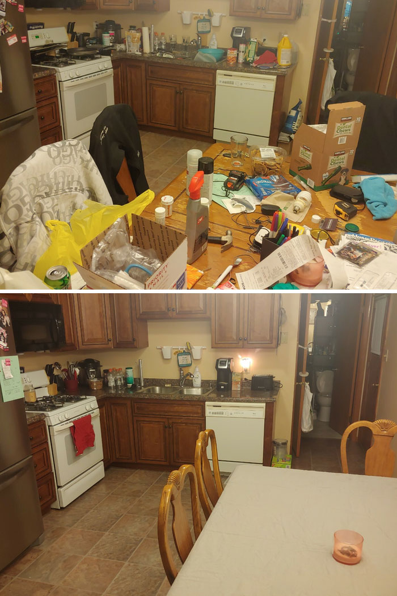

Before & After Gallery


 

See the difference our professional cleaning services make.
See Our WorkOur Residential & Construction Cleaning service is designed to tackle the toughest cleaning jobs, whether it's your home or a newly built or renovated space. We specialize in cleaning up after construction, removing dust, debris, and leftover materials from floors, windows, and surfaces. For residential cleaning, we ensure every room is spotless, from deep-cleaning kitchens and bathrooms to dusting and sanitizing common areas. Our team works efficiently to create a fresh, clean environment, leaving your home or construction site ready for immediate use or move-in.
Our Move In & Out Cleaning service is perfect for ensuring a smooth transition when moving into a new home or preparing your old one for new occupants. We thoroughly clean every inch of the space, from deep cleaning floors, walls, and windows to sanitizing kitchen appliances, bathrooms, and cabinets. Whether you're moving in or moving out, we take the stress out of the cleaning process, leaving your home spotless and ready for the next chapter. Let us handle the mess, so you can focus on settling in or getting your property ready for sale or rent.
Our Deep & Basic Cleaning service is designed to meet all your cleaning needs, whether you're looking for a routine refresh or a thorough, deep clean. Our Basic Cleaning includes essential tasks such as dusting, vacuuming, mopping, and sanitizing common areas to maintain a tidy and welcoming space. For a more detailed cleaning, our Deep Cleaning goes beyond the surface, tackling areas that are often overlooked—like behind furniture, inside cabinets, and on top of appliances. Whether it’s for a one-time service or regular maintenance, we ensure every corner is spotless, providing you with a fresh and hygienic environment.

""I couldn't be more impressed with the exceptional service provided by Brophy Cleaning! Their team went above and beyond to ensure my home was spotless. From deep-cleaning my kitchen to ensuring every nook and cranny was pristine, they left no detail overlooked. I also had them handle post-construction cleanup, and they did an outstanding job, removing all the dust and debris, making the space feel brand new. The professionalism, attention to detail, and friendly service made all the difference. I highly recommend Brophy Cleaning for anyone looking for reliable, high-quality cleaning services!"
- Brandon, Homeowner / Contractor
"We use Brophy Cleaning for our office. They're always punctual, professional, and thorough."
- John, Office Manager